Sẵn sàng dựng bộ skill của riêng bạn
Hai phần: cài máy gồm 4 bước, khoảng 30 đến 50 phút, rồi cài skill đầu tiên, khoảng 10 phút. Làm một lần trước khi vào Chương 1. Xong là bắt tay dựng skill cho công việc của bạn ngay, không mất thời gian loay hoay cài đặt giữa chừng.
Học xong chương này bạn làm được
- Có một công cụ AI đã cài trên máy, đăng nhập xong, đọc được tệp trong một thư mục bạn chỉ định.
- Đã cài skill đầu tiên vào máy và gọi nó chạy đúng.
- Mở được tệp
SKILL.mdra xem, biết một skill trông như thế nào trước khi tự viết skill của mình ở Chương 1.
Chưa từng tự cài phần mềm bao giờ cũng không sao. Việc ở đây chủ yếu là: mở trang web, bấm nút tải, mở tệp vừa tải rồi bấm tiếp tục cho tới hết. Chỗ nào cần gõ chữ thì đã có sẵn để bạn chép và dán.
Cả khoá dùng hai công cụ: Claude và Codex. Bạn chọn một trong hai ở Bước 1, trang sẽ tự ẩn phần của công cụ kia đi.
Một số từ hay gặp
Đọc lướt một phút, gặp từ lạ thì quay lại đây.
| Từ | Giải nghĩa |
|---|---|
| Skill | Bản hướng dẫn một đầu việc cho AI, nằm trong một thư mục riêng trên máy bạn. |
| SKILL.md | Tệp chính của mỗi skill. Phần đầu ghi tên và khi nào dùng, phần sau ghi các bước AI phải làm. |
| Agent | AI xử lý trọn một quy trình nhiều bước, học ở Chương 3. |
| Harness | Bộ quy tắc chung cho cả hệ thống AI, học ở Chương 5. |
| Thư mục làm việc | Thư mục bạn chỉ cho AI đọc và ghi tệp trong đó. |
| Terminal / PowerShell | Cửa sổ để gõ lệnh bằng chữ, nền đen. Windows gọi là PowerShell, Mac gọi là Terminal. Mở nó ra: Windows bấm phím cửa sổ rồi gõ PowerShell; Mac bấm Command và phím cách rồi gõ Terminal. |
| Git | Công cụ ghi nhớ lại từng bước thay đổi tệp. Claude cần nó mới dám sửa tệp thật trên máy bạn. |
Công cụ cần chuẩn bị
| Công cụ | Bắt buộc | Chi phí | Nơi tải, đăng ký |
|---|---|---|---|
| 1 công cụ AI, chọn 1 trong 2: Claude hoặc Codex | Có | Khoảng 500.000đ mỗi tháng (20 đô) | claude.ai · chatgpt.com |
| Git | Chỉ khi chọn Claude | Miễn phí | git-scm.com |
Yêu cầu máy tối thiểu: máy tính Windows hoặc Mac, không học được trên điện thoại. Claude cần Windows 10 bản 1809 trở lên hoặc macOS 13 trở lên, tối thiểu 4 GB RAM.
Cần chuẩn bị sẵn một thứ: thẻ thanh toán quốc tế Visa hoặc Mastercard, để đăng ký tài khoản ở Bước 2. Chưa có thẻ thì đọc phần lưu ý ở Bước 2, có cách xử lý.
Lưu ý tiết kiệm: nếu bạn đã có sẵn tài khoản ChatGPT Plus, bạn dùng được Codex ngay, không cần mua thêm gì.
Chi phí công cụ là tiền trả cho hãng công cụ, tách riêng với học phí lớp.
Bước 1: Chọn Claude hay CodexChọn xong trang tự ẩn công cụ kia đi - 3 phút
Bạn chỉ cài một công cụ. Hai công cụ đều chạy được skill theo cùng một kiểu tệp SKILL.md, nên skill bạn viết trong khoá dùng được ở cả hai.
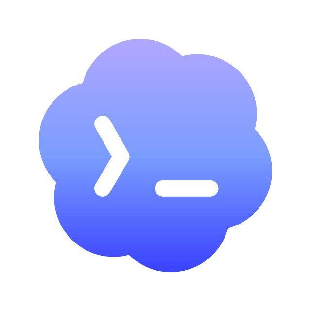
Đổi công cụ sau này cũng không mất gì: skill là các tệp nằm trên máy bạn, không nằm trong công cụ.
Kiểm bằng: bạn chốt được một trong hai công cụ, và nói được vì sao mình chọn nó.
Bước 2: Đăng ký tài khoản trả phí10 phút
Công cụ AI cần bản trả phí mới đủ sức làm việc thật. Bản miễn phí dùng một lúc là bị chặn ngang giữa chừng.
Chọn công cụ ở Bước 1 để trang chỉ hiện phần bạn cần làm.
Đăng ký tài khoản Claude
Vào claude.ai, tạo tài khoản. Đăng nhập bằng Google cho nhanh.
Nâng lên gói Pro, khoảng 20 đô mỗi tháng.
Đăng ký tài khoản ChatGPT
Vào chatgpt.com, tạo tài khoản.
Nâng lên gói Plus, khoảng 20 đô mỗi tháng. Đã có Plus rồi thì bỏ qua bước này.
Lưu ý thẻ thanh toán, quan trọng ở Việt Nam. Cả hai công cụ đều thu tiền bằng thẻ quốc tế Visa hoặc Mastercard. Thẻ thường bị từ chối thì dùng thẻ ghi nợ quốc tế hoặc thẻ Visa ảo mà nhiều ngân hàng cấp ngay trên app: Techcombank, VPBank, TPBank, MB. Hoặc nhờ người quen có thẻ quốc tế trả hộ.
Chưa thanh toán được ngay thì vẫn cứ làm tiếp Bước 3 để cài phần mềm trước. Cố gắng có tài khoản trả phí trước khi vào Chương 1.
Kiểm bằng: đăng nhập lại trang web của công cụ, vào mục thanh toán thấy gói Pro hoặc Plus đang hoạt động, không còn là gói miễn phí.
Bước 3: Cài công cụ AI và mở thư mục làm việc15 đến 20 phút
Trước khi cài, tạo sẵn một thư mục trống để làm việc cho cả khoá, đặt ở ổ D hoặc ổ E cho máy chạy nhẹ, ví dụ D:\Agent-Mastery. Cả khoá bạn làm việc trong thư mục này.
Chọn công cụ ở Bước 1 để trang chỉ hiện phần bạn cần làm.
Cài Claude
-
Vào claude.com/product/claude-code, bấm nút tải đúng máy bạn. Nút đen Download for Windows; máy Mac thì trang tự đổi thành bản macOS.
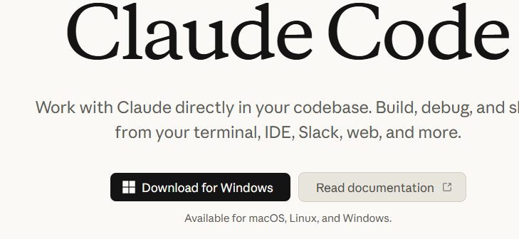
Cài như phần mềm thường, bấm tiếp tục cho tới hết.
-
Mở app, đăng nhập bằng tài khoản đã đăng ký ở Bước 2.
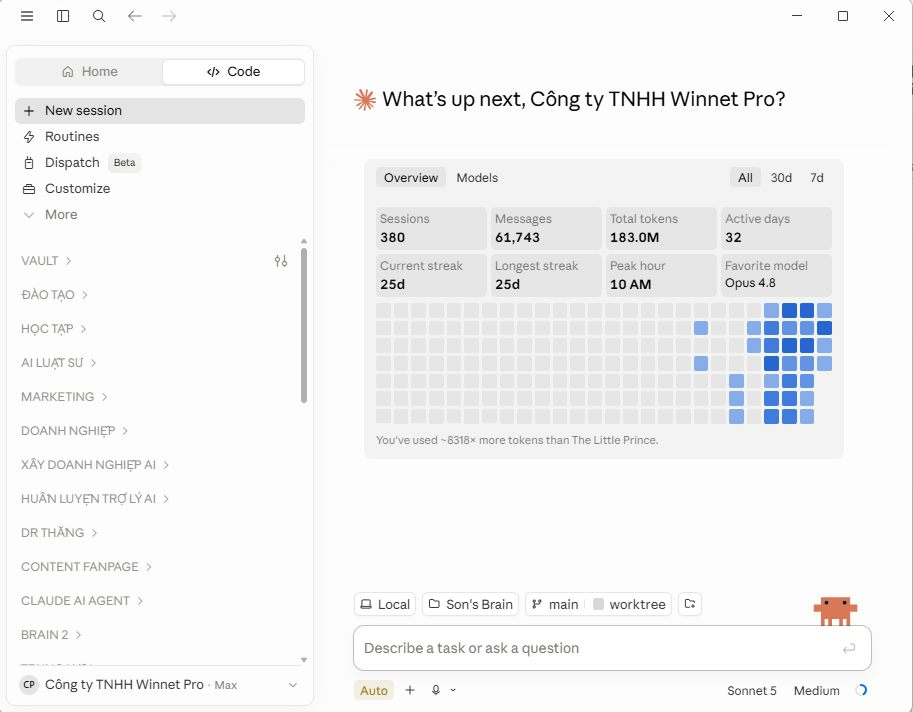
-
Bấm tab Code (cạnh Chat và Cowork), chọn Local, bấm Select folder rồi chọn thư mục làm việc bạn vừa tạo. Nếu bấm Code mà app hỏi nâng gói, nghĩa là bạn cần hoàn tất gói Pro ở Bước 2 trước.
Ảnh cần chụpTab Code sau khi đã chọn thư mục làm việc, thấy rõ tên thư mục ở thanh trên. Chụp trên một thư mục mẫu sạch, không lộ tên khách hay tên tài khoản công ty.
Kiểm bằng: ở tab Code, hỏi AI "Thư mục này có những tệp gì?" và AI trả lời được. Thư mục mới tạo thì nó báo đang trống.
Cài bị báo lỗi thì kéo xuống mục Sửa lỗi hay gặp.
Cài Codex bản app
Tải đúng app có biểu tượng, không phải bản dòng lệnh.
-
Vào chatgpt.com/codex, bấm tải xuống đúng bản máy bạn.
-
Tải xong, trên máy có tệp tên ChatGPT Installer, thường nằm ở màn hình nền hoặc thư mục Tải xuống. Bấm đúp vào nó.
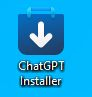
-
Đợi chạy tới 100%. Cửa sổ Microsoft Store hiện ra và tự tải, bạn không phải bấm gì thêm. Đừng bấm Cancel.
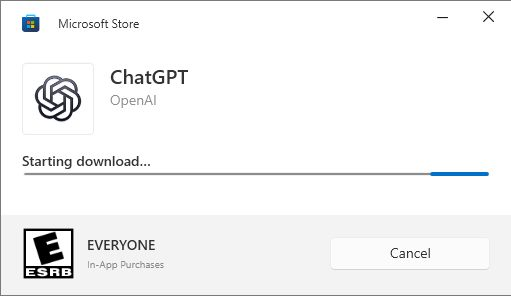
-
Chạy xong, bấm Continue to sign in rồi đăng nhập bằng chính tài khoản ChatGPT của bạn.
-
Đăng nhập xong nó hỏi vài câu khảo sát. Chọn nhanh cũng được rồi bấm Continue. Thấy nút bỏ qua thì cứ bấm.
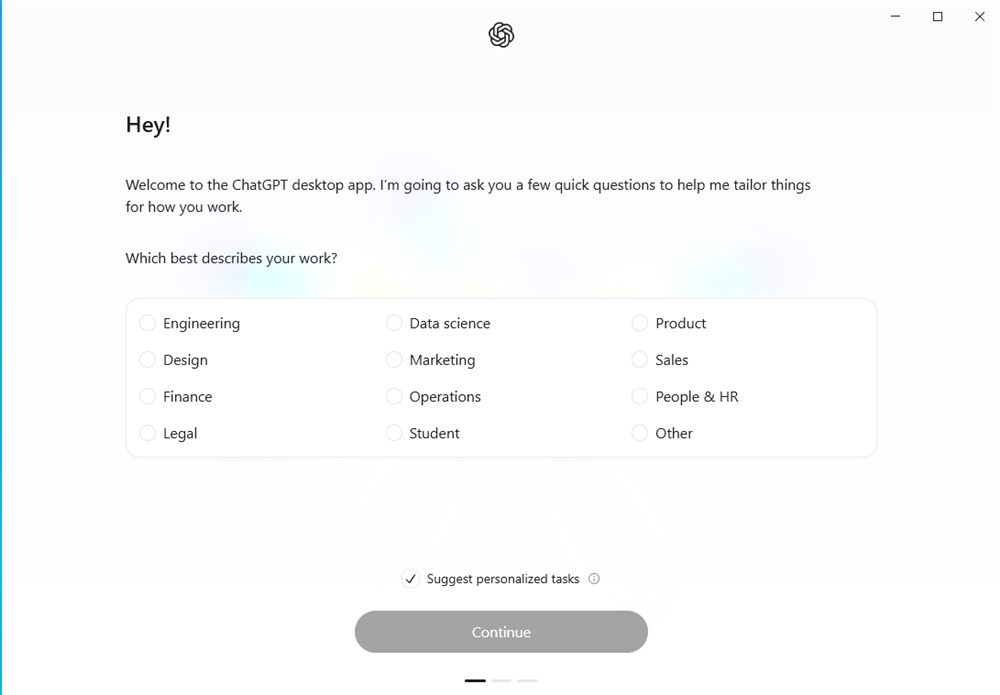
-
Máy hỏi cấp quyền thì bấm Yes.
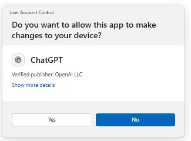
-
Dùng công tắc Chat / Work ngay phía trên ô nhắn để chuyển sang chế độ Work. Đây là chế độ chạy Codex.
Ảnh cần chụpCông tắc Chat/Work phía trên ô nhắn, đang gạt sang Work. -
Ở màn hình Choose where to work, chọn open a folder rồi trỏ vào thư mục làm việc bạn vừa tạo.
Ảnh cần chụpMàn hình Choose where to work của Codex, thấy mục open a folder.
Kiểm bằng: công tắc đang ở Work, hỏi AI "Thư mục này có những tệp gì?" và AI trả lời được.
Bước 4: Cài GitChỉ khi chọn Claude - 5 phút
Claude bắt buộc phải có Git mới làm việc được trên thư mục thật của bạn. Thiếu nó, bạn sẽ gặp dòng chữ đỏ "Git is required for local sessions".
-
Kiểm tra đã có chưa. Mở PowerShell (Mac: Terminal), gõ:
git --versionHiện ra một dòng bắt đầu bằng
git version 2là máy đã có sẵn, bỏ qua phần cài.Ảnh cần chụpCửa sổ PowerShell chạy lệnh git --version ra dòng phiên bản. Cài Git cho Windows. Vào git-scm.com, bấm nút Git for Windows/x64 Setup, tải bản 64-bit. Chạy tệp cài, cứ bấm tiếp tục cho tới hết, không cần đổi gì. Máy Mac thường có sẵn Git.
-
Tắt hẳn Claude rồi mở lại. Bấm chuột phải vào biểu tượng Claude dưới khay đồng hồ rồi chọn Quit. Đóng cửa sổ thôi là chưa đủ.
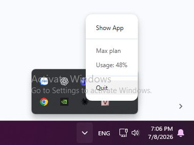
Kiểm bằng: mở PowerShell mới, gõ git --version, hiện ra một dòng bắt đầu bằng git version 2.
Sửa lỗi hay gặp
Ba lỗi dưới đây xảy ra khi cài Claude trên Windows. Máy nào cũng có thể dính, không phải bạn làm sai.
Lỗi 1: Administrator access is required, install without Cowork
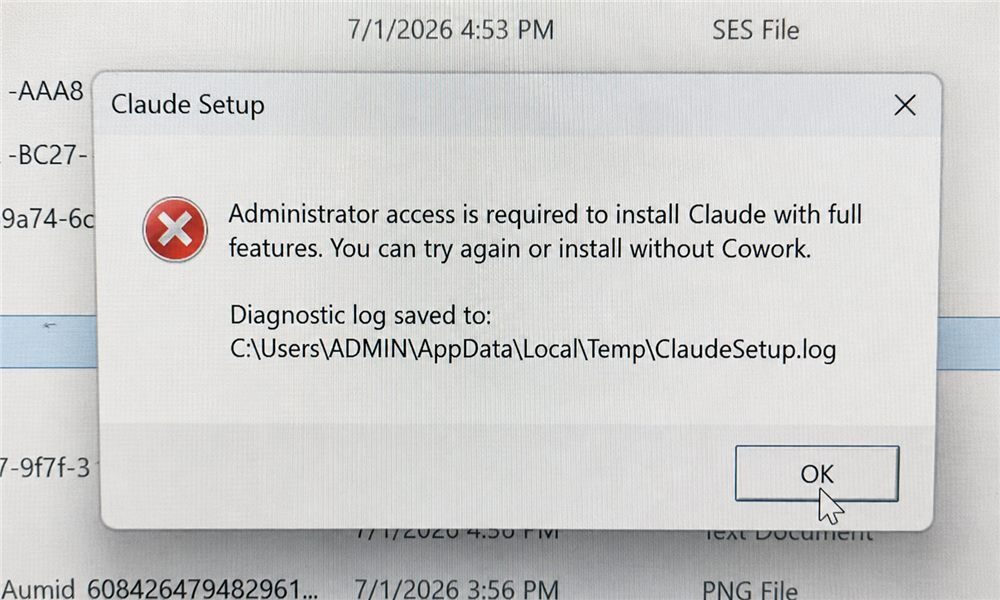
Hộp thoại này chỉ có một nút OK, là thông báo chứ không phải cho bạn chọn. Claude có kèm một tính năng phụ tên Cowork, cần quyền quản trị của Windows mới cài được. Lớp mình chưa cần Cowork.
Bấm OK.
Mở lại tệp cài Claude.
Nếu có lựa chọn Install without Cowork thì chọn mục này.
Tiếp tục cài đặt bình thường.
Nếu vẫn muốn cài đầy đủ luôn: tắt cửa sổ cài, bấm chuột phải vào tệp cài, chọn Run as administrator, Windows hỏi quyền thì bấm Yes, rồi cài lại.
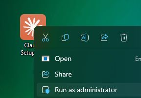
Lỗi 2: Installation failed, AddPackage failed HRESULT 0x80073CFF
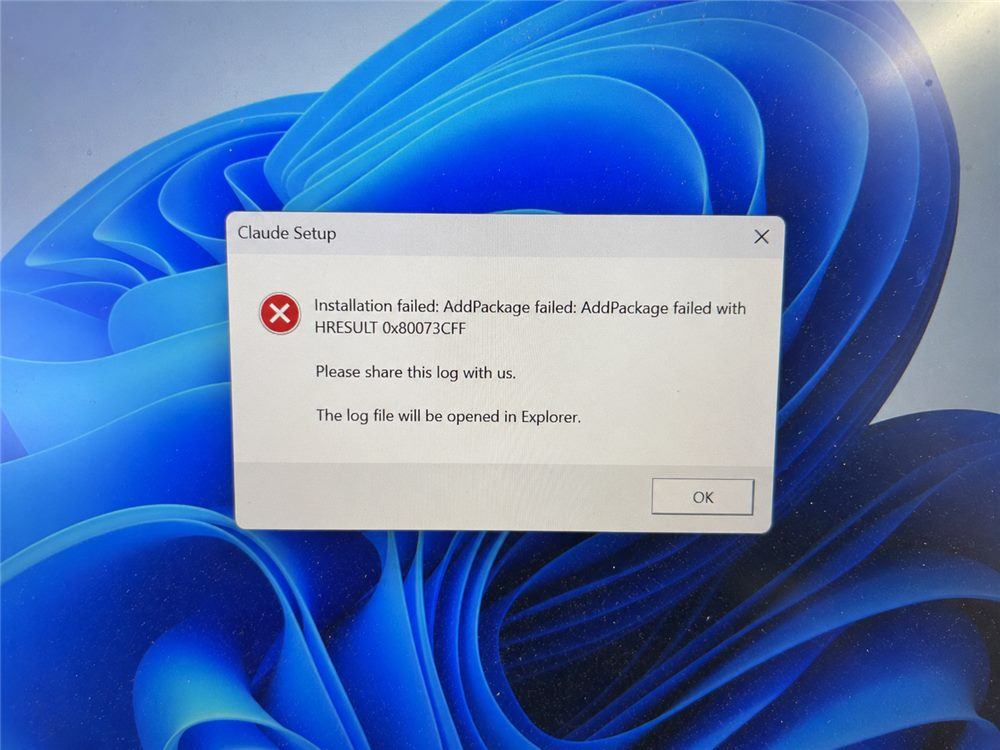
Làm theo thứ tự tới khi hết lỗi.
Cách 1 - Bật Developer Mode. Bấm phím cửa sổ, gõ Developer Mode, chọn kết quả đầu tiên, gạt công tắc sang bật, rồi cài lại Claude.
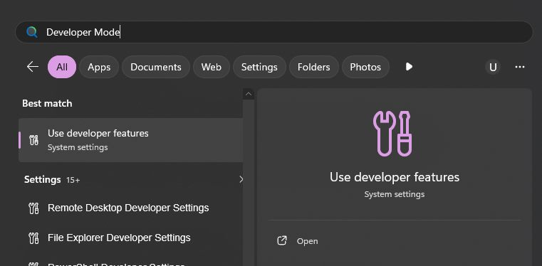
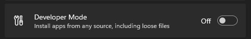
Cách 2 - Vẫn lỗi nghĩa là còn bản cài cũ. Bấm phím cửa sổ, gõ Installed apps, tìm Claude, bấm dấu ba chấm rồi chọn Uninstall. Khởi động lại máy và cài lại từ đầu.
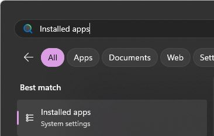
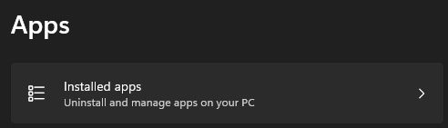
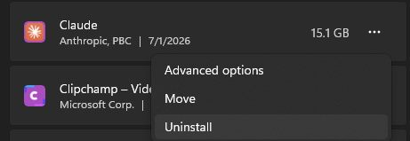
Cách 3 - Vẫn lỗi nữa: chuyển tạm sang Codex nếu bạn có tài khoản ChatGPT Plus, để không mất thời gian. Quay lại thử Claude sau cũng được.
Lỗi 3: Dòng chữ đỏ "Git is required for local sessions"
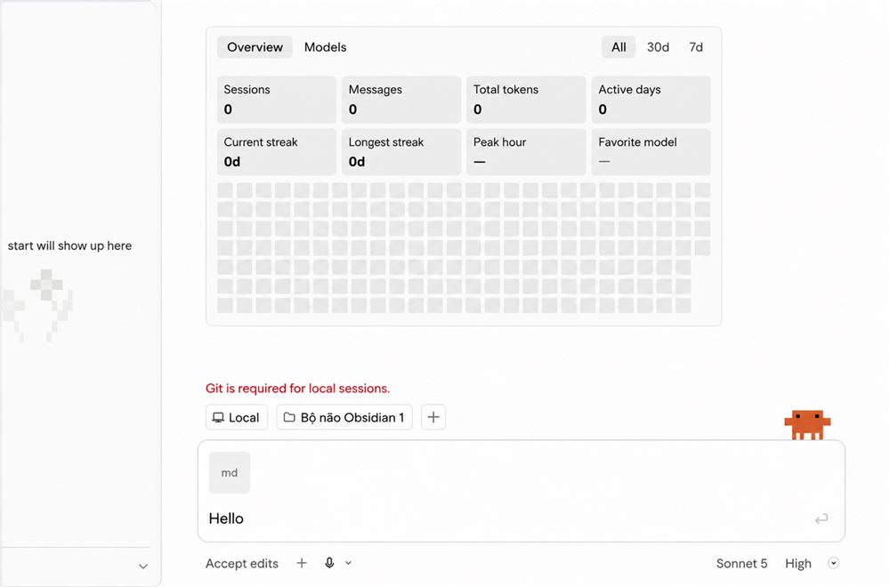
Máy chưa cài Git hoặc cài chưa xong.
Cài Git theo Bước 4.
Tắt hẳn Claude, chuột phải biểu tượng dưới khay đồng hồ rồi chọn Quit, sau đó mở lại.
Mở PowerShell gõ
git --version, hiện dòng bắt đầu bằnggit version 2là xong.Đã cài mà vẫn báo lỗi: khởi động lại máy một lần rồi mở lại Claude.
Bảng kiểm phần cài máy
Tick dần khi làm xong từng việc. Máy tự nhớ, đóng trang mở lại vẫn còn.
Đủ dấu tick là máy bạn đã sẵn sàng. Phần tiếp theo là cài skill đầu tiên.
Khi bị kẹt
Đây là phần kỹ thuật nên kẹt là bình thường, đừng ngại. Làm theo thứ tự sau.
Hỏi chính công cụ AI của bạn hoặc ChatGPT trước, đây là cách nhanh nhất. Mô tả đúng bạn đang làm bước nào, máy Windows hay Mac, nó báo lỗi gì. Chụp được màn hình lỗi thì gửi luôn ảnh kèm câu hỏi.
Vẫn chưa hết kẹt: chụp màn hình chỗ báo lỗi, gửi vào nhóm học viên, ghi rõ bạn đang làm bước mấy, dùng Claude hay Codex, máy Windows hay Mac, nó báo gì.
Skill, Agent và Harness là gì
Máy đã sẵn sàng. Từ đây là phần bạn sẽ làm suốt cả khoá. Cả khoá xoay quanh ba khái niệm:
- Skill - một bản hướng dẫn công việc bạn viết sẵn cho AI. AI đọc nó rồi làm đúng trình tự, đúng tiêu chuẩn của bạn, không phải giải thích lại mỗi lần.
- Agent - AI xử lý trọn một quy trình gồm nhiều bước, dùng nhiều skill nối với nhau, có điểm dừng chờ bạn duyệt.
- Harness - bộ quy tắc chung cho cả hệ thống: AI được làm gì, không được làm gì, phải kiểm chứng ra sao trước khi trả kết quả.
Chương 0 dừng ở chỗ cài một skill có sẵn và thấy nó chạy. Tự viết skill bắt đầu từ Chương 1.
Nguyên tắc xuyên suốt khoá: AI làm, bạn duyệt. Bạn không cần biết lập trình, chỉ cần mô tả việc mình muốn bằng tiếng Việt.
Cài skill đầu tiên10 phút
Bạn sẽ cài skill giao-viec-ai, một skill tôi dùng thật trong công việc của mình. Nó làm việc này: bạn giao một việc, AI hiểu ý bạn trước, chưa rõ thì hỏi lại, rồi trình bản xác nhận ghi rõ sẽ làm gì và giao ra cái gì. Bạn đồng ý thì nó mới bắt tay làm.
Bạn không phải tự tạo thư mục hay tệp. Bạn dán một câu giao việc, AI tải skill về và đặt vào đúng chỗ.
Việc 1: Đưa link kho cho AI
Mở công cụ AI, đúng thư mục làm việc ở Bước 3. Dán hai dòng dưới đây vào ô nhắn rồi gửi. Dùng Claude hay Codex đều dán đúng hai dòng này.
https://github.com/sontyphu/skill-giao-viec-ai
Kiểm tra, xác minh, cài đặt.Trong kho có sẵn phần hướng dẫn viết cho AI đọc. Nó sẽ tải skill về, soi nội dung xem có an toàn không, rồi đặt vào đúng thư mục skill của công cụ bạn đang dùng.
AI hỏi xin phép đọc mạng, tạo thư mục hoặc ghi tệp thì bấm cho phép.
Kiểm bằng: AI báo lại đường dẫn đầy đủ của tệp, kết thúc bằng giao-viec-ai\SKILL.md, kèm câu lệnh gọi skill.
Kho công khai github.com/sontyphu/skill-giao-viec-ai, bạn mở xem nội dung bất cứ lúc nào.
Việc 2: Mở tệp ra xem
Mở thư mục AI vừa báo, bấm chuột phải vào tệp SKILL.md, chọn mở bằng Notepad (Mac: TextEdit).
Nhìn qua cấu trúc: phần giữa hai dòng --- ở đầu là tên và khi nào dùng, phần bên dưới là các bước và luật AI phải theo. Chương 1 bạn sẽ viết một tệp giống hệt cấu trúc này cho công việc của chính bạn.
Thư mục .claude hoặc .agents có dấu chấm đầu tên nên máy có thể ẩn đi. Không thấy thì dán thẳng đường dẫn AI báo vào thanh địa chỉ của cửa sổ thư mục.
Kiểm bằng: mở được tệp, thấy dòng name: giao-viec-ai ở đầu.
Việc 3: Gọi skill chạy thử
Tắt hẳn công cụ AI rồi mở lại, để nó nạp skill mới. Mở đúng thư mục làm việc, rồi gửi câu dưới đây.
/giao-viec-ai viết lại yêu cầu này cho rõ: làm slide chuyên nghiệp hơnMẹo: gõ riêng dấu / vào ô nhắn là hiện danh sách skill đang có. Thấy giao-viec-ai trong danh sách nghĩa là công cụ đã nhận skill.
$giao-viec-ai viết lại yêu cầu này cho rõ: làm slide chuyên nghiệp hơnMẹo: gõ riêng dấu $ vào ô nhắn là hiện danh sách skill đang có. Thấy giao-viec-ai trong danh sách nghĩa là công cụ đã nhận skill.
Kiểm bằng: AI hỏi lại bạn những điều còn thiếu, hoặc trình bản xác nhận đủ các mục Tên việc, Mục tiêu, Yêu cầu thực hiện, Đầu ra cần bàn giao, Tiêu chuẩn đạt, rồi dừng lại hỏi bạn có đồng ý để bắt đầu làm không. Nó dừng chờ bạn thay vì làm luôn, nghĩa là skill đã chạy.
Gọi skill mà AI không nhận, hoặc làm luôn không trình bản xác nhận
Chưa tắt hẳn app. Thoát hẳn công cụ AI rồi mở lại. Đóng cửa sổ thôi là chưa đủ.
Tệp nằm sai chỗ. Hỏi AI: "Kiểm tra giúp tôi tệp SKILL.md của skill giao-viec-ai đang nằm ở đâu, có đúng thư mục skills cá nhân của công cụ này không." Nằm sai chỗ thì nhờ nó chuyển sang đúng chỗ.
Tệp tải về bị sửa. Mở tệp xem dòng đầu tiên có đúng là
---và dòng thứ hai có đúngname: giao-viec-aikhông. Sai thì dán lại hai dòng ở Việc 1 để cài lại.Gõ nhầm ký hiệu. Claude gọi bằng
/, Codex gọi bằng$. Gõ nhầm ký hiệu của công cụ kia thì AI không hiểu đó là lệnh gọi skill.
Cài xong skill và gọi chạy được là bạn đã sẵn sàng. Xong thì vào học Chương 1.